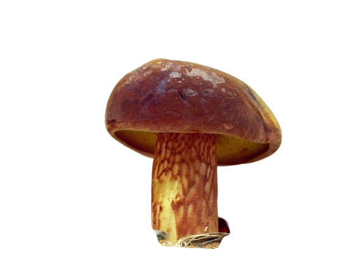
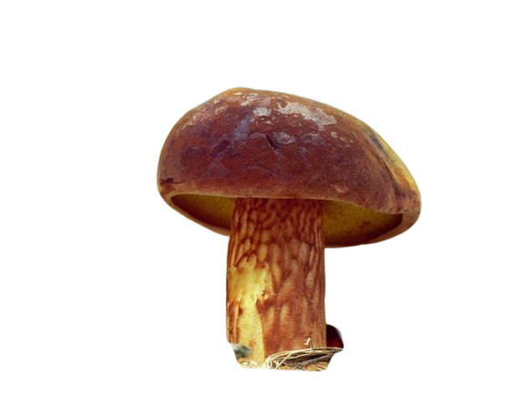

Descripción morfológica
Xerocomus silwoodensis es un boleto de la familia Boletaceae descrito por primera vez en 2007 en el campus de Silwood Park (Reino Unido). Presenta un sombrero convexo de 4-10 cm de diámetro, de color marrón oliváceo a marrón amarillento, con superficie seca y aterciopelada que puede agrietarse con la edad. Los tubos son amarillo limón y azulean ligeramente al corte. El pie es esbelto, de 5-9 cm de altura, amarillento con finas fibrillas marrones.
Características distintivas
- Poros: Angulosos, de 1-2 mm de diámetro, color amarillo dorado que vira lentamente a azul verdoso al tacto.
- Carne: Amarilla pálida en el sombrero, más intensa en la base del pie, con ligero enazulamiento al corte.
- Esporas: Fusiformes, lisas, de 10-13 × 4-5 µm, color ocre en masa.
- Olor/sabor: Aroma fúngico suave y sabor dulce ligeramente ácido.
Distribución y hábitat
Especie actualmente conocida en el sur de Inglaterra, norte de Francia y recientemente reportada en Bélgica. Crece en bosques mixtos con presencia de robles (Quercus robur) y hayas (Fagus sylvatica), formando probablemente micorrizas con estos árboles. Prefiere suelos calcáreos bien drenados y aparece desde finales de verano hasta otoño (agosto-octubre).
Condiciones ecológicas
- Sustrato: Suelos ricos en humus, a menudo en bordes de caminos forestales.
- Asociaciones: Frecuentemente encontrado cerca de Xerocomus ferrugineus.
- Rareza: Considerado localmente escaso, posiblemente subregistrado.
Ciclo de vida y relaciones ecológicas
Como otros boletos, forma asociaciones micorrícicas con árboles hospedadores. La fructificación parece estar favorecida por veranos húmedos seguidos de otoños templados. Las esporas son dispersadas por el viento. Estudios moleculares recientes sugieren que podría estar más relacionado con el género Boletus que con Xerocomus.
Etapas de desarrollo
- Primordio: Aparece como una pequeña protuberancia blanca en el suelo.
- Expansión: El sombrero se desarrolla completamente en 3-5 días.
- Madurez: Los poros cambian de amarillo brillante a amarillo oliváceo.
Importancia ecológica y estado de conservación
- 🌳 Simbiosis: Contribuye a la salud de bosques caducifolios mediante micorrizas.
- 🔍 Interés científico: Especie clave para estudiar la evolución de los boletos.
- 📊 Estado: No evaluado en la Lista Roja IUCN pero considerado raro.
Datos relevantes
- Descubrimiento: Descrito por primera vez en 2007 por A. Hills y colegas.
- Epíteto: "silwoodensis" hace referencia a su localidad tipo (Silwood Park).
- Comestibilidad: Presumiblemente comestible pero demasiado raro para recolectar.
- Confusiones: Similar a Xerocomus subtomentosus pero con reacción al azul más débil.
Recomendaciones para su observación
- Buscar en bosques maduros de roble y haya entre agosto y octubre.
- Examinar cuidadosamente el color de los poros y su reacción al tacto.
- Documentar hallazgos con fotografías de todas las partes (incluyendo corte).
- Reportar avistamientos a sociedades micológicas locales para ampliar su distribución conocida.
Técnicas de identificación
- Observar el característico enazulamiento lento de los poros.
- Notar la superficie del sombrero aterciopelada que no se vuelve viscosa.
- Comparar con especies similares mediante microscopía de esporas.
Investigación reciente
Estudios filogenéticos (2020-2023) sugieren que X. silwoodensis podría representar un linaje ancestral dentro de los Boletaceae. Su secuenciación genómica está ayudando a entender la transición evolutiva entre los géneros Xerocomus y Boletus.